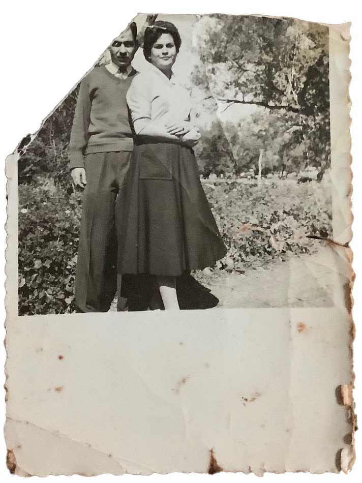

الخط الأخضر بفلسطين
الخط الأخضر بفلسطين، هو لفظ يطلق على الخط الفاصل بين الأراضي المحتلة عام 1948 والأراضي المحتلة عام 1967. وقد حددته الأمم المتحدة بعد هدنة عام 1949 التي أعقبت الحرب التي خاضها العرب مع إسرائيل عام 1948. ورغم تحفظات القانونيين فإن ذلك اللفظ استخدم في المفاوضات الفلسطينية الإسرائيلية.المسؤول عن تخطيط ورسم الخط الاخضر وعن محادثات ومفاوضات وقف اطلاق النار هو الوسيط رالف بانش الذي فاز على اثر ذلك بجائزة نوبل للسلام .
ويفصل الخط الأخضر إسرائيل عن الدول العربية المجاورة وهي: سوريا والأردن لبنان ومصر. وعملت كل من هذه الدول بموجب الخط كأنه كان حدودا دولية حتى حرب 1967 برغم من عدم اعترافها به كحدود بشكل رسمي. مر الخط الأخضر داخل مدينة القدس كما قسم عددا من القرى في المناطق المأهولة مثل منطقة المثلث (أبرزها قرية برطعة). بعد حرب 1967 أصبح الخط الأخضر خطا إداريا يفصل بين المنطقة الجغرافية الخاضعة للسلطة الإسرائيلية العادية والمناطق الخاضعة
הקו הירוק הוא קו שביתת-הנשק של מדינת ישראל עם
מצרים
, עם ירדן, עם סוריה ועם לבנון, כפי שנקבע בהסכמי שביתת הנשק שנחתמו בשנת 1949, לאחר מלחמת העצמאות ועד מלחמת ששת הימים בשנת
1967

. שמו ניתן לו מכך שבמפות המודפסות שלפני מלחמת ששת הימים, הוא סומן בצבע ירוק. כינויים נוספים לקו הירוק הם "גבולות 4 ביוני 1967", "גבולות 67" וגם "גבולות 48".
גבולותיה של ישראל לפני 1967 שיקפו את פרישת הכוחות הישראלים והערבים בעקבות הסכמי שביתת הנשק לאחר מלחמת העצמאות. רשמית לא היה זה קו גבול אלא קו הפרדת הכוחות בין ישראל לשכנותיה. רוב חלקי הקו הירוק משמשים היום כגבול מינהלי בין השטחים עליהם חלה ריבונות ישראל, לבין שטחים המנוהלים על-ידה באמצעות ממשל צבאי או על-פי הסכמים עם הרשות הפלסטינית. לדוגמה, בהסכם לשיתוף פעולה שנחתם בין ארגון מגן דוד אדום ומקבילו הסהר האדום הפלסטיני בדצמבר 2005 נקבע כי הקו הירוק יגדיר את הגבול בין תחומי הפעילות הגאוגרפיים של הארגונים.